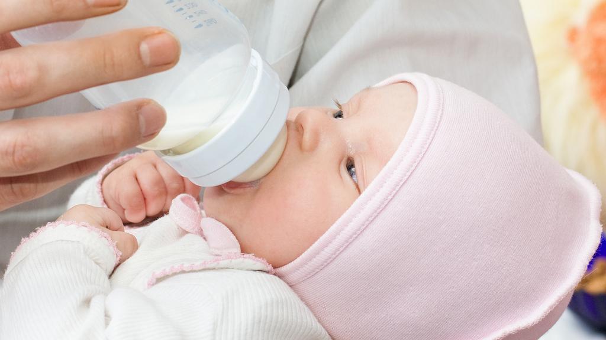
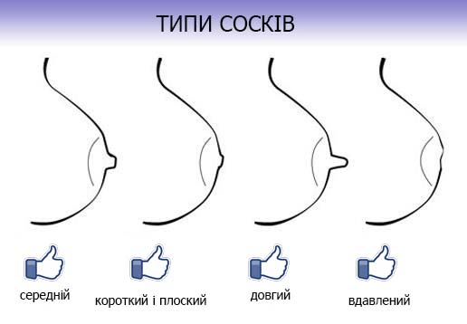
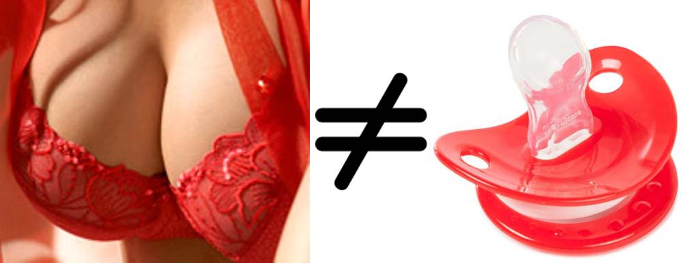
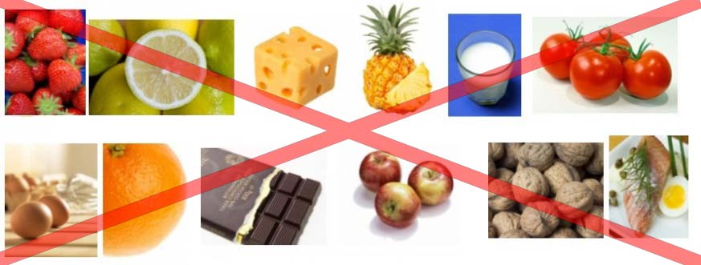

15 найпоширеніших міфів про грудне вигодовування
На сьогодні існує безліч науково необґрунтованих, інколи до сміху абсурдних, а іноді і дуже шкідливих порад на тему грудного вигодовування. У цій статті ми поговоримо про основні міфи, які крутяться навколо грудного вигодовування та стають перешкодою на шляху до успішного грудного вигодовування. Отже, давайте розбиратися, де міф, а де правда.
МІФ 1. Під час вагітності варто натирати соски жорстким рушником для профілактики тріщин та болю при годуванні новонародженого, щоб соски «загрубіли» та «звикли» до механічної стимуляції.
Варто зазначити, що третьому триместрі така процедура може бути вкрай небезпечною, адже груба механічна стимуляція сосків може спричинити перейми [https://www.ncbi.nlm.nih.gov/pubmed/2391024; https://www.ncbi.nlm.nih.gov/pubmed/26444882]. Насправді єдиною профілактикою тріщин та болючості при годуванні грудьми є правильна організація грудного вигодовування, у першу чергу – це правильне прикладання. Тому, якщо хочете підготуватися до годування заздалегідь, шукайте та вивчайте достовірну інформацію про правильну організацію грудного вигодовування.

МІФ 2. У перші дні після пологів варто догодовувати дитину молочною сумішшю для уникнення втрати ваги, поки не прибуде молоко у мами.
Фізіологічною нормою втрати ваги у перші дні після пологів є 5 – 10% від ваги при народженні [http://bdp.ks.ua/PROTOCOL/neo152_01.html]. Молозиво – це єдине, що може і має потрапляти у шлунок новонародженої дитини, він є зовсім крихітним – всього 5 – 7 мл (розміром як вишня), і тих цінних крапель молозива є абсолютно достатньо для насичення та повноцінного розвитку. Догодовування новонародженого молочними сумішами є вкрай небезпечним для його життя та здоров’я. Більш детально про небезпеку молочних сумішей в перші дні життя дитини: http://new-degree.ru/articles/mother/damage/
МІФ 3. Груди варто тримати у теплі, щоб їх не «простудити».
«Простудити» груди якщо і можливо, то дуже складно, оскільки при низьких температурах зазвичай відбувається переохолодження всього організму, а не конкретно грудей. Насправді коли годуюча жінка зустрічається із болем та ущільненням в грудях, то йде мова не про їх «простуду», а про лактостаз (застій молока), причинами якого можуть бути багато факторів. Це може бути незручний одяг (білизна), неправильне прикладання дитини до грудей, тріщини сосків та можливі інфекції, схильність до закупорки протоків, перетискання грудей під час сну, механічні пошкодження молочної залози, укуси комах, а також зміна погоди, різке переохолодження всього організму чи пережиті мамою стреси. Як впоратись із цією проблемою дізнаєтесь у цій статті.
МІФ 4. Під час лактації потрібно їсти більш калорійну їжу, щоб збільшувати жирність молока.
Харчування мами не впливає на жирність грудного молока. Та й не варто за це хвилюватись! Адже природа подбала про те, щоб жирність Вашого молока була саме такою, якою вона і повинна бути саме для Вашої дитини в конкретний момент. На жирність грудного молока можуть впливати різні фактори: час доби (як правило, найбільш жирним є молоко опівдні), вік дитини (після року молоко стає жирнішим), стан здоров’я дитини (під час хвороби жирність молока підвищується), частота випорожнення грудей (чим частіше випорожнюються груди - тим більша жирність молока) [https://www.ncbi.nlm.nih.gov/pmc/articles/PMC3586783/; https://www.researchgate.net/publication/264560730_The_Factors_Affecting_Human_Milk_Composition; https://kellymom.com/nutrition/milk/change-milkfat/].
МІФ 5. Обов’язково потрібно зціджувати молоко після кожного годування до останньої краплі, щоб уникнути застою молока.
Під дією гормонів Ваші груди «працюють» за принципом «попит-пропозиція». Це означає, що скільки молока виділилося з грудей, стільки ж прибуде до наступного годування. При додатковому зціджуванні після годування молочні залози починають виробляти більше молока, ніж цього потребує дитина. Як наслідок, мама потрапляє у пастку рутинного зціджування, яке веде до морального та емоційного виснаження. Тому для того, щоб уникнути застою молока, а також надмірного його утворення, потрібно прикладати дитину до грудей на вимогу.
МІФ 6. Дитину варто годувати грудьми за режимом, не частіше кожних 3 год, у протилежному випадку молоко не встигає перетравлюватись та спричиняє проблеми з ШКТ.
Грудне молоко перетравлюється в середньому за 45 хвилин [http://new-degree.ru/gvinform/easy_breastmilk/]. Саме тому дитину можна і варто прикладати до грудей настільки часто, скільки дитина цього потребує (від 10 – 12 разів на добу), інтервалом не більше 1,5 - 2 год (якщо йде мова про немовля). Особливий склад молока допомагає йому краще перетравлюватись, добре засвоюватись та не спричиняти додаткового навантаження на ШКТ дитини при частому годуванні. Про «четвертий триместр вагітності» та про важливість частих прикладань до грудей дізнаєтесь більше тут.
МІФ 7. Якщо лактуюча жінка пережила сильний стрес та негативні емоції, у неї може «перегоріти» (зникнути) молоко.
Частково це припущення є правдою. Перш за все варто зазначити, що молоко не може «перегоріти», раптово зникнути, адже зменшення кількості виробленого молока – це поступовий процес, який залежить від дії гормонів. У процесі лактації беруть участь два основних гормони – пролактин та окситоцин. Пролактин відповідає за продукування молока, а окситоцин – за його виділення (віддачу). Інгібітором (речовиною, що пригнічує дію) окситоцину є адреналін, який і виділяється при стресі, болі, негативних переживаннях тощо. Тому при пережитому стресі порушується відтік молока, але не зменшується його кількість. Для того, щоб вирішити цю ситуацію, варто простимулювати окситоцин для кращого виділення молока з грудей (теплий душ, тепле пиття, розслаблюючий масаж тощо).

МІФ 8. Плоскі, втягнуті соски є непридатними для годування дитини.
При правильному прикладанні до грудей дитина захоплює не лише сосок, а більшу частину ареоли разом із соском. Таким чином сам сосок знаходиться на рівні м’якого піднебіння дитини і по суті у самому процесі смоктання активної участі не бере. Тому тип сосків – це не вирок, це особливість, яка не є перешкодою у здатності вигодовувати дитину. Наголошую, що важливою є порада не використовувати накладки для сосків, а також пустушки/пляшки/інші імітатори материнських грудей.
МІФ 9. Якщо мама втрачає відчуття наповненості у грудях, а дитина стає вкрай тривожна та неспокійна – то це є ознакою недостатньої кількості молока та причиною для догодовування.
Достовірними ознаками достатності кількості молока для дитини є кількість сечовипускань (для дитини віком до 2 тижнів нормою є така кількість сечовипускань за добу, скільки днів дитині; з 2 тижнів до 6-ти місяців – 10-12+ за добу; старше 6-ти місяців – 8-10+ за добу) та набір ваги (мінімум 125 г за тиждень, або 500 г за місяць). Усі інші ознаки не є інформативними. Тому якщо Ви не відчуваєте наповненості у грудях – ми Вас вітаємо, у Вас настала зріла лактація! Це означає, що тепер молоко утворюється у процесі годування, а груди стали більш м’якими. Про інші хибні ознаки нестачі молока можна почитати тут.

МІФ 10. Груди – для їжі, а пустушка – для заспокоєння.
Материнські груди для дитини – це не лише об’єкт для задоволення потреби у їжі та питті. Груди для дитини – це відчуття безпеки, любові, це спілкування з мамою, заспокоєння, засинання, зменшення болю тощо. Жодна пустушка не замінить дитині маму. Смоктати груди – це не примха, це базова потреба дитини, якою не варто нехтувати. Більше того, використання пустушки є вкрай небезпечним для подальшого успішного грудного вигодовування, адже є великий ризик неправильного захоплення грудей після використання пустушок/пляшок/інших імітаторів материнських грудей.

МІФ 11. Для того, щоб дізнатись, чи достатньо дитина отримує грудного молока, варто робити контрольні зважування до та після годування.
Справа у тому, що дитина їсть молоко з грудей зовсім не рівномірно: це може бути і 30 мл, і 130, а може взагалі 10 мл протягом 30 хв смоктання! І це є нормою, яку не варто вираховувати. Тому такі контрольні зважування є абсолютно неінформативними і навіть шкідливими, адже змушують маму нервуватись та тривожитись, що у свою чергу негативно впливає на виділення молока. Тому, якщо є необхідність переконатись у тому, чи достатньо Ваш малюк отримує молока – слідкуйте за вагою (але не частіше 1 разу на 3 дні) та кількістю сечовипускань. Детальніше про тест мокрих пелюшок описано тут.

МІФ 12. Для уникнення алергічних проявів у дитини, годуючій мамі слід дотримуватись суворої дієти.
Харчування годуючої мами має бути звичним для неї, здоровим та повноцінним. Грудне молоко виробляється з елементів крові, а не з їжі, яку вживає мама. Тому усе, що добре сприймається організмом мами, можна вживати при грудному вигодовуванні. Сувора дієта може лише нашкодити. А про особливості харчування під час годування грудьми дізнаєтесь більше у цій статті.
МІФ 13. У грудному молоці після року немає нічого корисного.
Грудне молоко після року стає ще кориснішим! До прикладу, жирність молока після року збільшується з 7% (у 1 дослідженнях Mandel D, Lubetzky R, Dollberg S et al 2005 було показано середній показник жирності грудного молока серед дітей віком 2 – 6 місяців) до 10% (у віці 12 – 39 місяців); у ньому збільшується кількість таких речовин, як лактоферин та лізоцим – імунних агентів з антибактеріальною та протизапальною функцією, також молоко підвищує свою енергетичну цінність. Тому годування після року є не просто виправданим, але й необхідним для дітей. Більш детально про користь годування після року можна прочитати тут.
МІФ 14. Якщо мама захворіла, годування слід припинити, особливо, якщо у неї піднялась температура.
Якщо мама захворіла, годування потрібно продовжувати, це не лише не шкідливо, але й корисно, оскільки з грудним молоком дитині потрапляють антитіла, вироблені організмом матері [https://www.ncbi.nlm.nih.gov/pubmed/6798576; https://www.medscape.com/viewarticle/814970_2] Молоко не скисає ніколи, але температура 42 градуси за Цельсієм є небезпечною для життя. Тому підвищена температура у мами не становить небезпеки для дитини і не погіршує якість молока. Якщо мамі слід приймати ліки, то це у більшості випадків теж не є причиною для припинення годування, оскільки є багато препаратів сумісних з грудним вигодовуванням (сумісність можна перевірити у міжнародному довіднику e-lactancia.org).
МІФ 15. Не варто «привчати» дитину до рук (брати дитину часто на руки).
Тілесний контакт – це базова потреба немовлят. Є таке поняття як «четвертий триместр вагітності», він припадає на перші три місяці життя дитини. Новонародженого у буквальному сенсі потрібно «доносити». Ця крихітна людинка так потребує Вашої любові, ніжності, ласки. Це не капризи і не примхи, це необхідність і відкритість до любові. Тому, носіть Ваше щастя на руках, цілуйте, обіймайте, адже дітки ростуть так швидко, варто насолоджуватись цими неповторними моментами життя!
Сподіваюся, дана підбірка додала ясності у суперечливих питаннях та дозволить Вам уникнути помилок на шляху успішного грудного вигодовування.
Статтю редагувала Оля Колодка